/* carmen-winant - proofs */
12 plates. Deterministic overlays rendered by the composition-analysis skill.
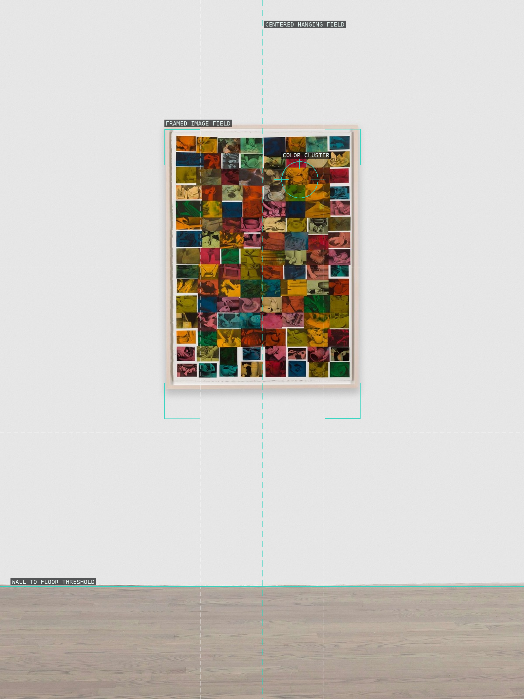
01-my-birth-installation
Centered framing gives a compact field of images room-scale force.
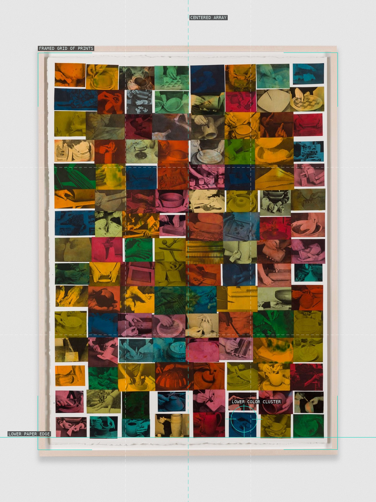
02-my-birth-detail
A regular outer frame holds an unequal array of color.
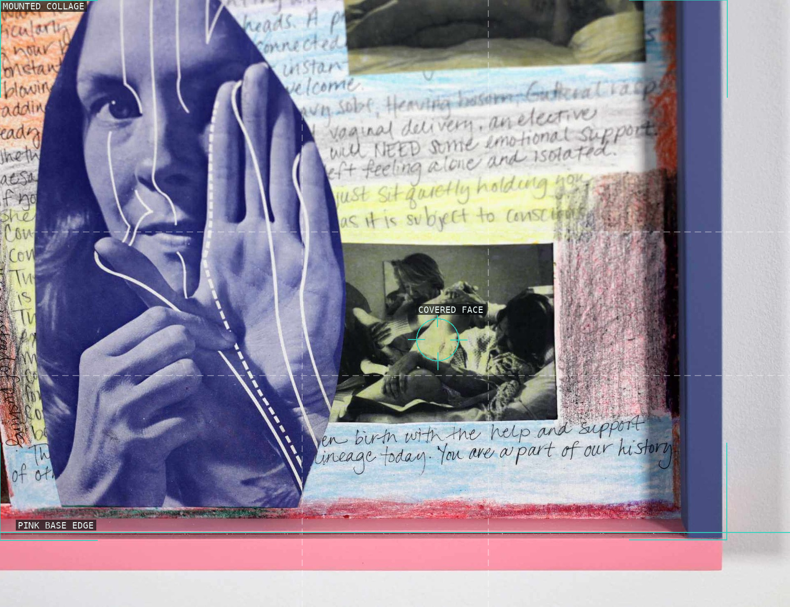
03-my-birth-reading-wall
Figure, handwriting, and pasted scene remain visibly discontinuous.
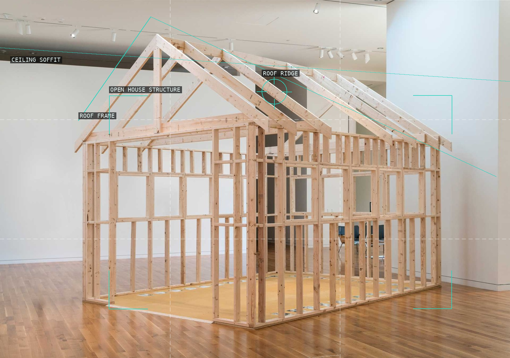
04-lesbian-land-installation
The roof frame makes the installation a walk-through archive.
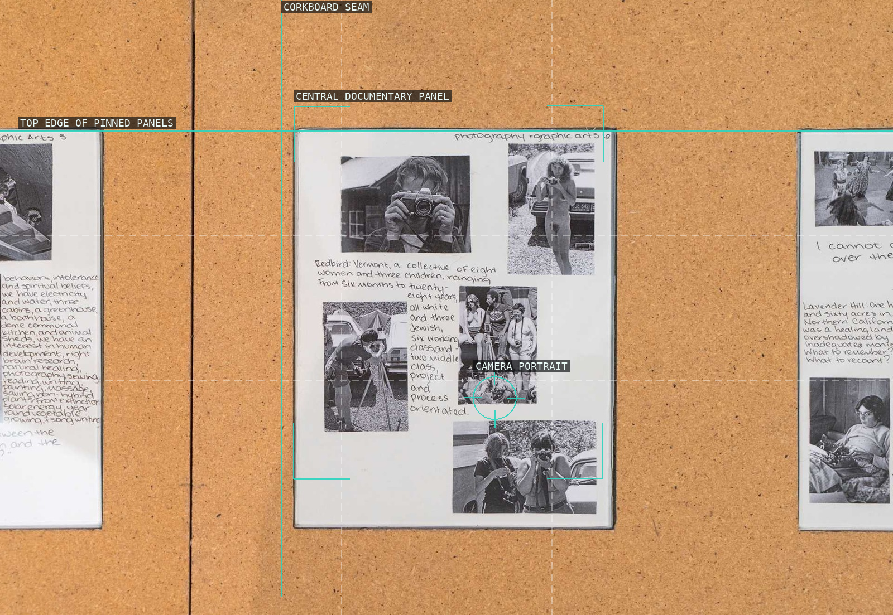
05-lesbian-land-detail
A clipped panel and corkboard seam isolate a collective record.
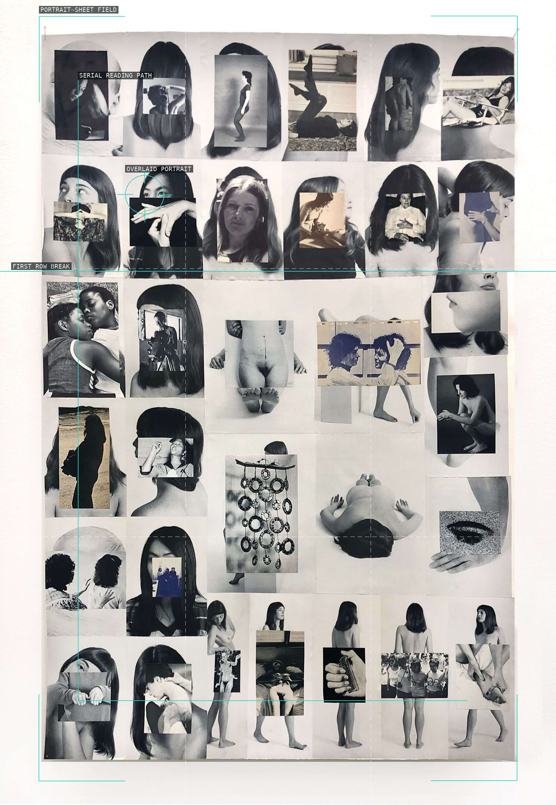
06-body-index-installation
Rows of portrait sheets turn bodies into a paced index.
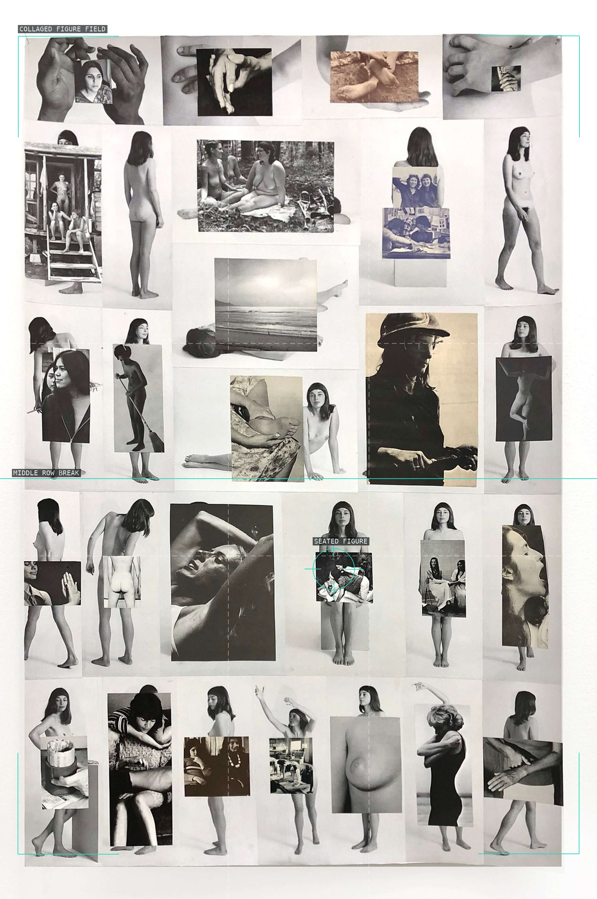
07-body-index-detail
Inserts repeatedly interrupt and reframe full figures.
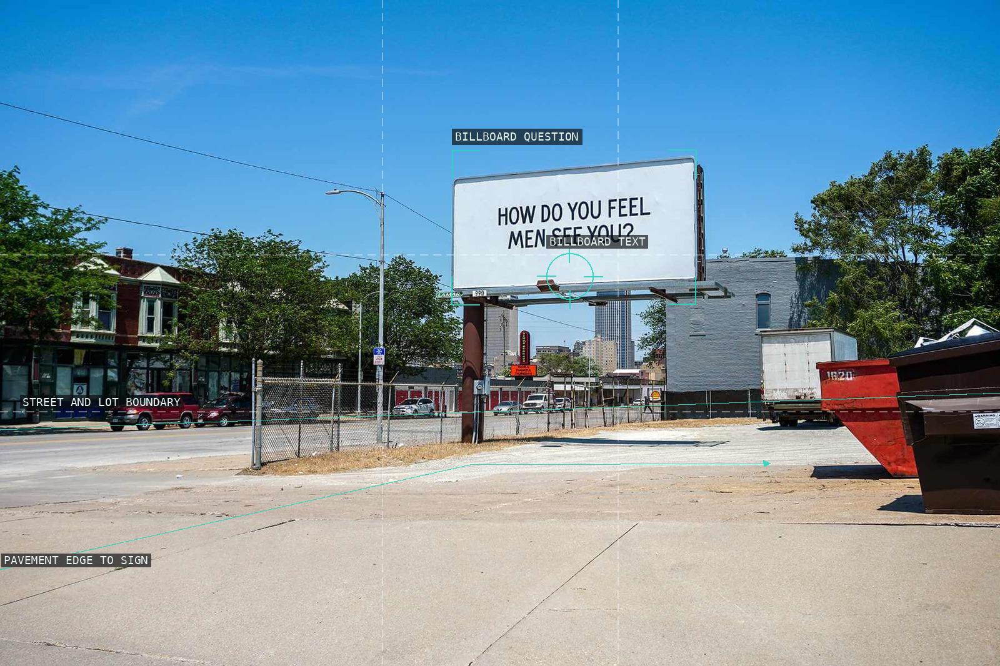
08-introduction-to-consciousness-raising
A billboard question dominates an open street field.
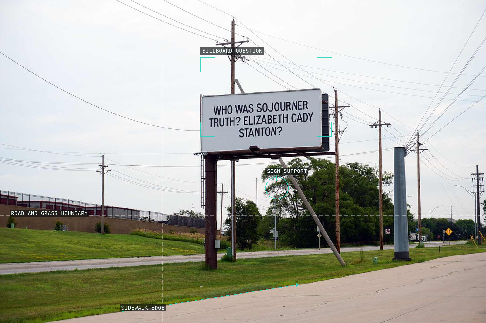
09-introduction-to-consciousness-detail
Utility wires and pavement keep a public question in view.
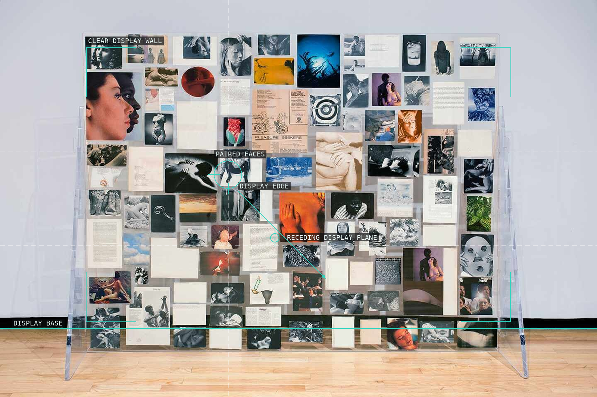
10-history-of-my-pleasure-installation
A clear support keeps a dense image field physically present.
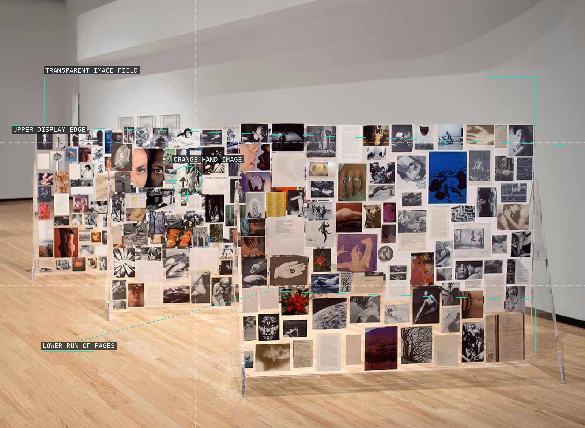
11-history-of-my-pleasure-detail
The clear display stays legible as a shallow plane in the room.
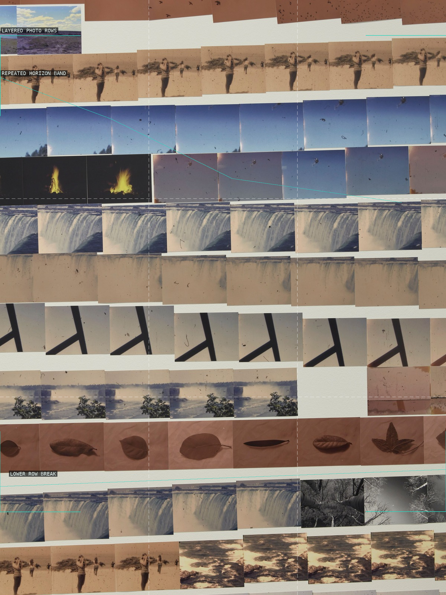
12-my-mother-and-eye-installation
Repeated sky and shoreline bands make return visible as structure.